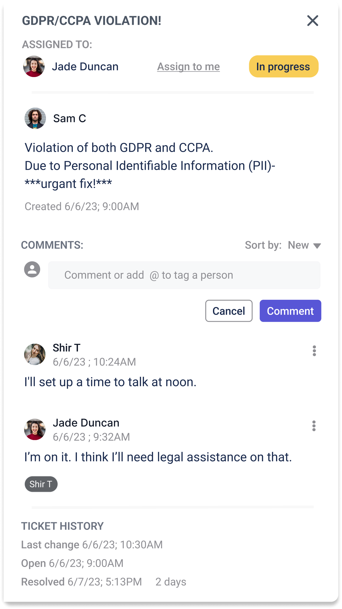
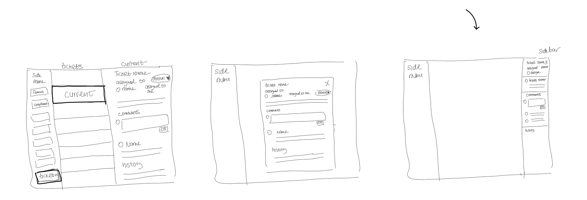
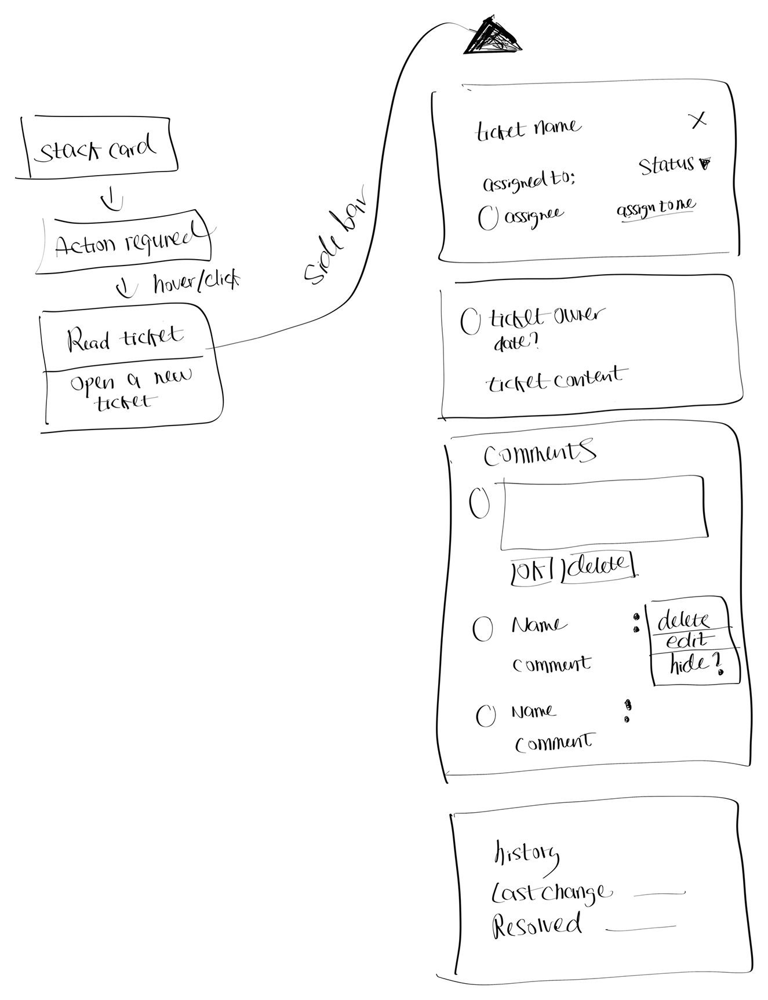
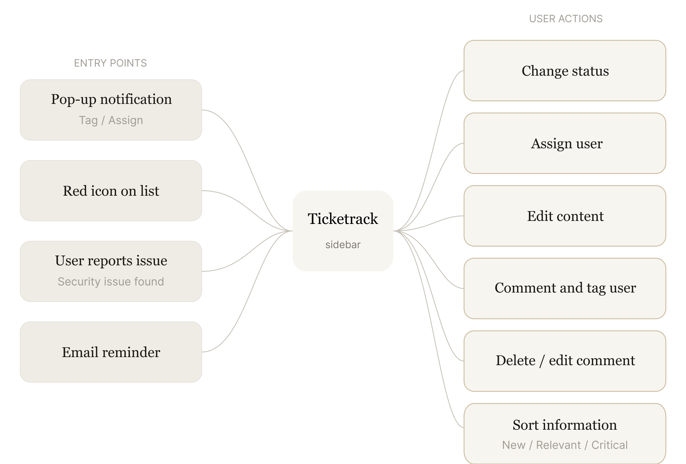
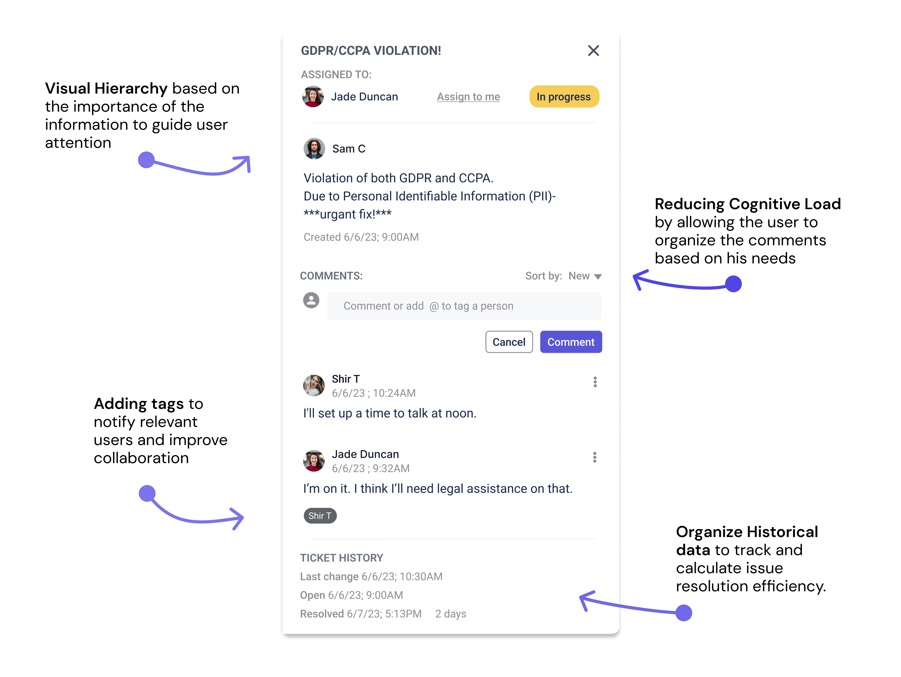

✕
A ticketing feature designed to manage security issues within a cybersecurity platform - turning compliance chaos into clarity.

Yes-Security helps companies secure their low-code and no-code applications by finding and fixing vulnerabilities - before they become breaches.
After stakeholders raised concerns about the lack of a clear process for reporting and resolving potential security issues, I proposed a ticketing system.
When Sarah, a non-technical user, discovers a potential security issue, she struggles to find a clear, trustworthy channel for reporting it - leading her to abandon the effort or send critical information into an unmonitored general inbox.
I began with secondary research to identify key requirements and competitor practices, then created initial sketches and gathered stakeholder feedback. Three core needs emerged.
Out of three visualization concepts, we chose the sidebar as the core interaction pattern - because it supports multitasking and maintains consistency across the platform.

After settling on the sidebar, I began brainstorming the entry point and the core ticket details. The key challenge: make it feel native to the security context, not like a generic help desk bolted on.

As a product that highlights security issues, we prioritized as many entry points as possible - allowing users to receive quick notifications or access the system easily wherever they are.

A clear and organized ticketing system that highlights compliance issues - allowing team members to track progress, collaborate, and stay updated until each issue is resolved.
The final design makes security issues visible and actionable - giving both technical and non-technical users a shared space to track, discuss, and resolve vulnerabilities without ever leaving the platform.
A persistent panel accessible from anywhere in the platform. Users can file a new ticket, view open issues, and check status - all without breaking their current workflow. The sidebar keeps security front-of-mind without becoming an interruption.

Joining with no cybersecurity background - and shaping user workflows within two weeks - taught me that fresh perspective is a feature, not a gap.
Early-stage startups limit user exposure - so secondary research and stakeholder alignment become the designer's best tools for grounding decisions.
If I had the chance, usability testing with real users and design partners would be the next step - to validate and refine what intuition alone can't fully confirm.
Unfortunately, the startup is no longer operating, so the feature wasn't implemented or tested in production. This project sharpened my ability to move fast in an unfamiliar domain while keeping user needs - not assumptions - at the center of every decision.